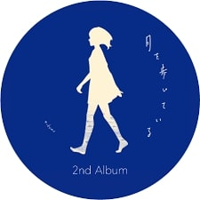

n-buna
n-bunaは日本の音楽プロデューサー、作詞家、作曲家です。彼はボカロPとしても知られており、感情豊かなメロディーと繊細な歌詞で多くのファンを魅了しています。
n-bunaは日本の音楽プロデューサー、作詞家、作曲家です。彼はボカロPとしても知られており、感情豊かなメロディーと繊細な歌詞で多くのファンを魅了しています。
・ウミユリ海底譚
・透明エレジー
・エイリアンエイリアン
・それがあなたの幸せとしても
・夜明けと蛍
n-bunaのデビューアルバム。瑞々しい歌詞とメロディーが特徴です。郷愁を誘う楽曲が多く、聴く者の心を掴みます。代表曲には「花と水飴」、「最終電車」などがあります。
夜の静寂や幻想的な雰囲気をテーマにしたアルバム。月明かりの下での散歩を思わせる美しいメロディーと詩が詰まっています。代表曲には「夜行」や「月の光」が含まれます。
演劇の幕が下りる前の感情を描いたアルバム。人生の一幕を終える瞬間の切なさや美しさを表現しています。代表曲には「カーテンコール」、「儚く散った花」があります。
ヨルシカはn-bunaとsuisによる音楽ユニットであり、感情豊かな楽曲と詩的な歌詞で知られています。彼らの音楽は多くのリスナーに愛されています。
・だから僕は音楽を辞めた
・春泥棒
・花に亡霊
・夜行
・言って。
音楽への愛憎をテーマにしたコンセプトアルバム。音楽との葛藤を描いた物語性のある楽曲が特徴です。代表曲には「だから僕は音楽を辞めた」、「ヒッチコック」があります。
エルマという女性の旅を描いたストーリーアルバム。エルマの心の成長や葛藤を美しい音楽で表現しています。代表曲には「エルマ」、「花に亡霊」が含まれます。
人生や芸術に対する疑問を投げかける深いテーマのアルバム。独自の視点で芸術とは何かを問いかける内容です。代表曲には「盗作」、「夜行」があります。